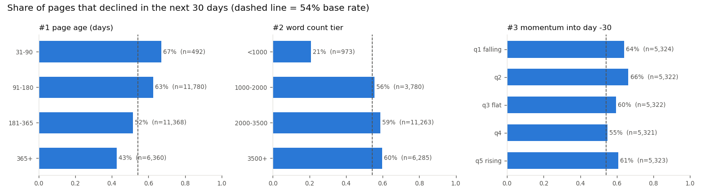
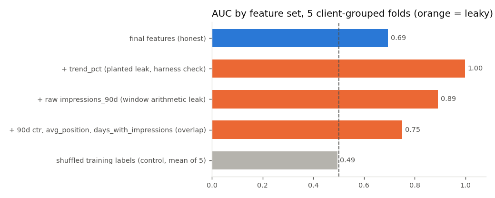
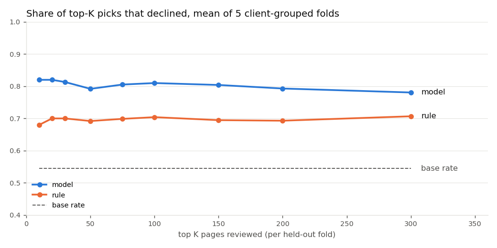
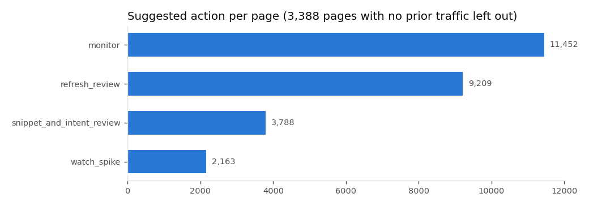

Content that ranks in Google search decays quietly: rankings slip, clicks thin out, and most teams notice too late. A content reviewer has a few hours and hundreds of pages per client, so the question they actually face is "which 10 pages do I open first?" A good ranking sends those hours to pages that are losing visibility. A bad one wastes editor time on pages that were fine, or misses the ones that were slipping.
A concrete case. One page had about 1,400 impressions in the month before last, down from about 2,500 the month before that. It was four months old and almost nobody clicked it. Is it next? A simple rule says "sliding, visible and young: 4 out of 4 points", and the model scores it at about 0.8 risk. In the next 30 days it lost 19.8% of its impressions, just short of the 20% line. That one page already holds most of this paper: the signal is real, the label is a hard cut, and the output can only ever be decision-support.
The tension. The obvious approaches don't hold up:
What this work contributes:
Source. The anonymised starter slice that ships with the FlyRank ML internship repository: content_refresh_anonymized.csv, 30,000 rows × 44 columns. One row is one page (content item), from 32 pseudonymised clients. The metrics come from Google Search Console (impressions, clicks, position) and Google Analytics 4 (sessions, engagement). Client and page IDs are hashes, used only for grouping and splitting, never as features. The data contains no titles, URLs, domains or keywords. The larger warehouse release was not used, so every number here describes these 32 clients and this one window.
Time windows. The file has no calendar dates, only trailing windows. I checked that they nest exactly: 90-day total = last 30 days + previous 30 days + days 61–90, with zero rows breaking this.
Label. A page is declining when its impressions in the last 30 days are more than 20% below the previous 30 days. 16,262 pages qualify, a base rate of 54.2%. Every precision number below should be read against that: random picking would already be "right" 54% of the time.
The panel is lopsided. Clients range from 3 to 7,008 pages; the biggest is 23% of all rows, and 8 clients have fewer than 100 pages. The slice is also pre-filtered: every page is at least 90 days old and has both impressions and sessions.
What was excluded, and why (28 of 44 columns):
| Excluded | Why |
|---|---|
| Every 90-day total and 90-day rate (CTR, average position, days with impressions, engagement, scroll, AI traffic) | A third of their window is the label window |
| Every last-30-day column | Measured inside the label window |
trend_direction, trend_pct | The label and its source |
days_since_last_update | 68% of pages were updated inside the label window (a timing leak) |
| Content-generation metadata, duplicate buckets and tiers | Not page signals, or derived from excluded columns |
| Client and page IDs | Pseudonyms: used for grouped splitting only |
The prediction is made at day −30, the start of the label window, so only days 31–90 and static metadata are allowed. The raw 90-day totals are used once, to back out the days 61–90 counts by subtraction, and are then dropped. That leaves 16 numeric and 3 categorical features (28 columns after one-hot encoding):
Before building anything, I tested common content-refresh beliefs. A signal had to point the same way in two disjoint halves of the clients and, where possible, inside individual clients. Groups below a minimum size got no verdict.

| Belief tested | Verdict | Evidence |
|---|---|---|
| Older pages decline more | Opposite | 365+ days: 43% vs 63% at 91–180 days; same direction in both halves and inside clients |
| Thin pages (<1,000 words) decline more | Mixed | Pooled, they look safer (21%), but 94% of thin pages are one client and the halves disagree: client mix, not length |
| Pages already losing impressions keep losing them | Confirmed | Falling pages 64–66% vs 55% for gently rising ones, in both halves |
| Aging page-one content (position ≤10, 180+ days) is at risk | False | Flagged pages declined 52%, less than younger page-one pages (62%) and below the base rate |
The baseline is what a careful editor could write by hand, built from the one signal that survived the audit. Each page scores 0–4 points:
Pages with no prior traffic score 0, and ties are broken by traffic at stake. The rule was written once and imported unchanged by every later notebook, so it could never be quietly weakened to flatter the model. On its own it already declined 72% of the time at 4 points vs 8% at 0 points.
Four models were compared on one client holdout (6 unseen clients) against the frozen rule:
| Single client holdout (6 test clients) | P@50 | Avg. precision | AUC |
|---|---|---|---|
| Logistic regression | 0.82 | 0.715 | 0.844 |
| Random forest | 0.74 | 0.739 | 0.870 |
| Gradient boosting | 0.74 | 0.712 | 0.854 |
| Decision tree (depth 3) | 0.68 | 0.635 | 0.814 |
| Rule baseline | 0.72 | 0.640 | 0.804 |
| Random (stratified) | 0.32 | 0.393 | 0.505 |
Logistic regression on standardised features was chosen for four reasons: it had the best precision at the top of the list (the metric fixed in advance), it was the most stable, its weights explain each pick, and it's cheap to run. The forest's slightly higher AUC and average precision reward ordering the whole list, including pages nobody will review; at the top 50 it trailed by 8 points. This holdout is noisy (two clients make up 92% of its rows and its base rate is 0.39), so every result reported below uses 5-fold validation.
5-fold GroupKFold by client: every client is held out exactly once, so no client ever appears in both training and test. Pages from one client share a website, a niche and tracking quirks, and a random row split lets a model recognise the client instead of the pattern. Measured here: a random 80/20 split reports AUC 0.737 and P@50 0.88; the grouped split gives 0.695 and 0.79. The gap is client memorisation. A time-based split would be better still, but this snapshot has a single label window per page, so time is handled by the day −30 feature cut.

| Feature set (5-fold, grouped by client) | AUC | P@50 |
|---|---|---|
| Final features (honest) | 0.695 | 0.792 |
+ trend_pct (planted leak: the harness must catch it) | 0.999 | 1.000 |
| + raw 90-day impressions (window arithmetic) | 0.892 | 0.992 |
| + 90-day CTR, position, days with impressions (overlap) | 0.751 | 0.892 |
| Shuffled training labels (control, mean of 5) | 0.495 | 0.464 |
| 5-fold, grouped by client (mean ± std) | P@20 | P@50 | P@200 | AUC |
|---|---|---|---|---|
| Logistic regression | 0.820 ± 0.115 | 0.792 ± 0.125 | 0.793 ± 0.094 | 0.695 ± 0.077 |
| Rule baseline (frozen) | 0.700 ± 0.127 | 0.692 ± 0.131 | 0.693 ± 0.162 | 0.670 ± 0.099 |
| Reference starter baseline | 0.420 ± 0.115 | 0.464 ± 0.173 | 0.497 ± 0.169 | 0.599 ± 0.107 |
| Base rate | 0.544 | 0.544 | 0.544 | 0.500 |
P@K is the share of the top K ranked pages that actually declined. The reference starter baseline is the hand-flag score shipped with the repository, evaluated under the same protocol.

| Fold | Test clients | Base rate | Model P@50 | Rule P@50 | Model AUC |
|---|---|---|---|---|---|
| 1 | 1 | 0.490 | 0.70 | 0.74 | 0.601 |
| 2 | 7 | 0.645 | 0.82 | 0.66 | 0.623 |
| 3 | 8 | 0.379 | 0.66 | 0.50 | 0.766 |
| 4 | 8 | 0.622 | 0.80 | 0.70 | 0.726 |
| 5 | 8 | 0.585 | 0.98 | 0.86 | 0.757 |
The model beats the rule in 4 of 5 folds. It loses in fold 1, which is a single very large client. My own target from the framing stage (P@50 ≥ 0.80) is met in 3 of 5 folds, not reliably. AUC is modest (0.60–0.77): the model is much better at the top of the list than at ordering the middle, which is the part a review queue uses.
For the 24 clients with 50+ pages, each client's own top 10 declined 75% of the time with the model vs 65% with the rule, against a 53% average client base rate. Ranking per client matters: a single global ranking put all of its top 100 pages in one client.
| Band (out-of-fold) | Pages | Share that declined |
|---|---|---|
| High | 1,220 | 76% |
| Medium | 11,703 | 70% |
| Low | 10,667 | 53% |
| None | 6,410 | 23% |
The bands are ordered as they should be. "High" means about 3 in 4 declined in this snapshot. It is not a probability promise.
From standardised weights and permutation importance (drop in average precision when a feature is shuffled), on the single holdout:
These are patterns the model uses, not causes of decline.
For a FlyRank editor using the queue tomorrow:
What the queue looks like (illustrative rows, client relabelled):
| Client | Rank in client | Decline risk | Suggested action | Confidence | Why (reason codes) |
|---|---|---|---|---|---|
| Client A | 1 | 0.875 | snippet_and_intent_review | medium | visible before · still settling · impressions without clicks · young page |
| Client A | 2 | 0.874 | snippet_and_intent_review | medium | visible before · still settling · impressions without clicks · young page |
| Client A | 3 | 0.869 | refresh_review | high | already sliding · visible before · still settling · impressions without clicks · young page |

Before acting on a page, a person checks, in order:
Never automated off this score:
I tested a drift check by treating half the clients as "a new month" and computing the Population Stability Index (PSI) per feature:
The triggers:
All code and notebooks are public: github.com/Prithvi-Satish/FlyRank-Project. The work lives in work/notebooks/, with shared feature and baseline code in work/scripts/, so every notebook uses identical features.
git clone https://github.com/Prithvi-Satish/FlyRank-Project.git cd FlyRank-Project pip install -r requirements.txt # run top to bottom, in order: # work/notebooks/w03_data_contract.ipynb # work/notebooks/w03_feature_leakage_check.ipynb (writes work/scripts/lane_features.py) # work/notebooks/w04_signal_audit.ipynb # work/notebooks/w04_baseline_score.ipynb (writes work/scripts/lane_baseline.py) # work/notebooks/w05_model.ipynb # work/notebooks/w06_validation_audit.ipynb # work/notebooks/w07_action_playbook.ipynb # work/notebooks/capstone.ipynb (both .py files are committed, so this also runs alone)
work/outputs/capstone_results.md.Data: the anonymised content-performance starter slice provided by FlyRank in the FlyRank ML internship starter repository. It was used under that repository's data-use rules: pseudonymised IDs, no client names, URLs or queries, and aggregates only in public outputs. The underlying metrics come from Google Search Console and Google Analytics 4. Thanks to the FlyRank team for the data, the starter pipeline that served as a reference baseline, and the internship framework. The critique of two findings from FlyRank's March 2026 SEO research report (label thresholds, pooled comparisons, selection effects in refresh comparisons) is in the validation-audit notebook.